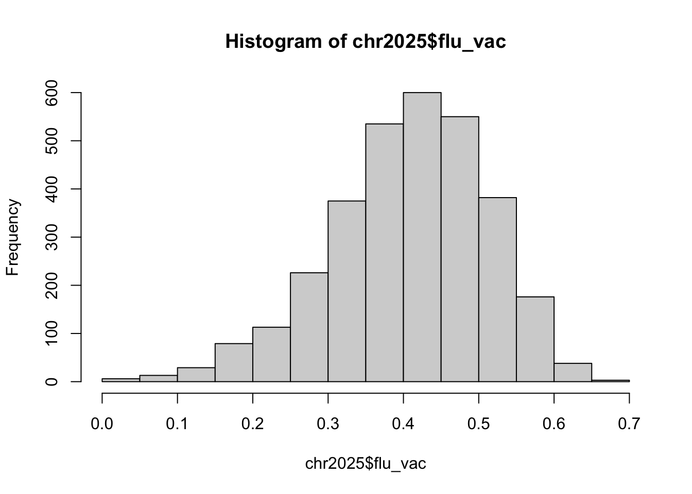
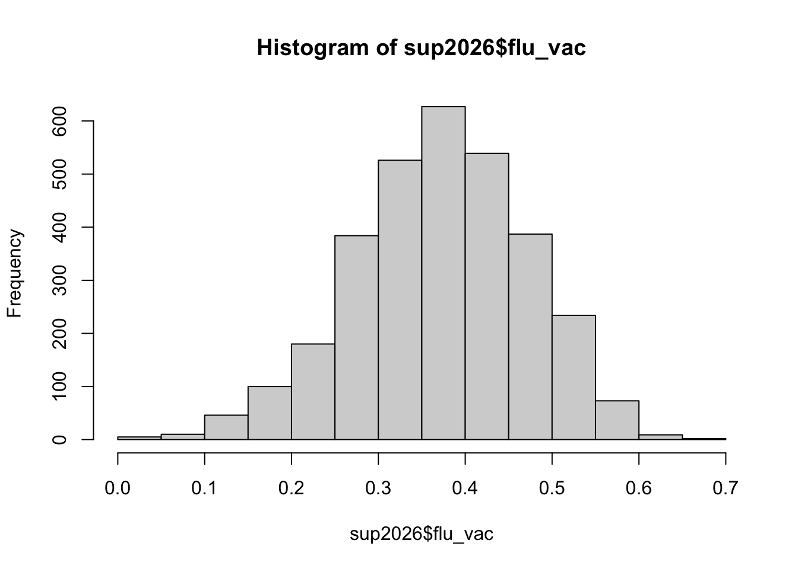

# A tibble: 6 × 15
fips name state state_fips release_year flu_vac pcp_ratio pcp_raw rural
<dbl> <chr> <chr> <int> <int> <dbl> <dbl> <dbl> <dbl>
1 1 Autauga C… AL 1 2025 0.36 2273. 4.40e-4 0.407
2 3 Baldwin C… AL 1 2025 0.44 1595. 6.27e-4 0.376
3 5 Barbour C… AL 1 2025 0.39 2496. 4.01e-4 0.659
4 7 Bibb Coun… AL 1 2025 0.31 1498. 6.67e-4 1
5 9 Blount Co… AL 1 2025 0.37 4920. 2.03e-4 0.905
6 11 Bullock C… AL 1 2025 0.33 5160 1.94e-4 1
# ℹ 6 more variables: income <int>, uninsured_adults <dbl>,
# uninsured_children <dbl>, hs_comp <dbl>, some_college <dbl>,
# Non_Proficient_English <dbl>
# A tibble: 6 × 10
fips name state state_fips flu_vac pcp_ratio pcp_raw uninsured_adults
<int> <chr> <chr> <int> <dbl> <dbl> <dbl> <dbl>
1 1 Autauga Cou… AL 1 0.3 2390. 4.18e-4 0.102
2 3 Baldwin Cou… AL 1 0.38 1540. 6.49e-4 0.114
3 5 Barbour Cou… AL 1 0.33 3088. 3.24e-4 0.156
4 7 Bibb County AL 1 0.28 1048. 9.54e-4 0.151
5 9 Blount Coun… AL 1 0.33 4959. 2.02e-4 0.166
6 11 Bullock Cou… AL 1 0.29 5101 1.96e-4 0.183
# ℹ 2 more variables: uninsured_children <dbl>, release_year <chr>
We have observations for n=3152 counties.
Outcome variable: vaccination rate
Ideally, we want to use the vaccination rate at the county level from the supplemental data for 2023, released in 2026, as it is the most recent. First we will compare the vaccination rates from 2022 and 2023.
summary(chr2025$flu_vac)
Min. 1st Qu. Median Mean 3rd Qu. Max. NAs
0.0300 0.3500 0.4200 0.4121 0.4900 0.6900 27
summary(sup2026$flu_vac)
Min. 1st Qu. Median Mean 3rd Qu. Max. NAs
0.0300 0.3100 0.3800 0.3772 0.4500 0.6600 30
hist(chr2025$flu_vac)

hist(sup2026$flu_vac)

The vaccination rate is higher in 2022. The distribution for 2023 is fairly symmetric where as the distribution for 2022 is a bit more left skewed.
Just under 1% of the data is missing for flu_vac overall in the 2026 data and only a few more counties for 2026 compared, so it is acceptable to use the outcome from the 2026 supplemental data.
# Join to create one data set, excluding counties with no data for 2023 flu vaccination rate.full_data <-left_join(sup2026, chr2025, by=c("fips", "state_fips", "name", "state"), suffix =c(".23",".22")) |>#select(-ends_with(".y")) |> # Remove 2025 columns when we have 2026 data#rename_with(~gsub("\\.x$", "", .)) |> # Remove .x suffix from 2026 columnsfilter(!is.na(flu_vac.23)) |># Exclude counties with no data for 2023 flu vaccination rate.select(-flu_vac.22, flu_vac = flu_vac.23)chr2025 <- chr2025 |>filter(!is.na(flu_vac))sup2026 <- sup2026 |>filter(!is.na(flu_vac))final_data <- full_data
PCP Ratio
# Missingness#summary(chr2025$pcp_ratio) # 154 NAs#summary(sup2026$pcp_ratio) # 243 NAs#nrow(full_data |> filter(is.na(coalesce(pcp_ratio.23, pcp_ratio.22)))) # 147 NAs# Conclusion: 2025 is more complete and there are only 7 extra counties we drop by using 2025 only, this is acceptable#hist(final_data$pcp_ratio.22) # right skewed# When there are 0 providers in a county, pcp = -population #nrow(final_data |> filter(pcp_ratio.22 < 0)) # 68 rows < 0final_data <- full_data |>filter(!is.na(pcp_ratio.22) & pcp_ratio.22>=0) |>select(-pcp_ratio.23, pcp_ratio = pcp_ratio.22)summary(final_data$pcp_ratio) # median pcp ratio is 2100 patients per provider
Min. 1st Qu. Median Mean 3rd Qu. Max.
172.3 1400.2 2099.7 2813.4 3260.5 29081.0
# Both Right skewedfinal_data |>pivot_longer(c(uninsured_children.23, uninsured_adults.23) ,names_to ="uninsured", values_to ="rate") |>ggplot(aes(x = rate, y = flu_vac)) +geom_point() +geom_smooth(method = lm) +facet_wrap(~uninsured)
Non-Proficient In English
summary(final_data$Non_Proficient_English) # 8 NAs
Min. 1st Qu. Median Mean 3rd Qu. Max.
0.000000 0.002776 0.007380 0.015913 0.018058 0.231315
hist(final_data$Non_Proficient_English) # Right Skew
ggplot(final_data, aes(x = Non_Proficient_English, y = flu_vac)) +geom_point(alpha = .5) +geom_smooth(method = lm) +labs (title ="2022 Non-Proficiency English vs 2023 Flu Vaccination",x ="Non-Proficiency English Rate",y ="Flu Vaccination rate")
Modeling Plan:
Income, uninsured rates and education exploratory plots showed possible relationship with flu vaccination rates. Non-Proficiency in English rate we did not see a relationship. For education and uninsured rates we need to be careful within both of them for colinearty so we may decide to only look at variable within both of them (for example just looking at uninsured adults and some_college).
# A tibble: 95 × 3
measure_id measure_name description
<dbl> <chr> <chr>
1 1 Premature Death Years of potential life lost before ag…
2 2 Poor or Fair Health Percentage of adults reporting fair or…
3 3 Uninsured Adults Percentage of adults under age 65 with…
4 4 Primary Care Physicians Ratio of population to primary care ph…
5 5 Preventable Hospital Stays Rate of hospital stays for ambulatory-…
6 9 Adult Smoking Percentage of adults who are current s…
7 11 Adult Obesity Percentage of the adult population (ag…
8 14 Teen Births Number of births per 1,000 female popu…
9 15 Homicides Number of deaths due to homicide per 1…
10 21 High School Graduation Percentage of ninth-grade cohort that …
# ℹ 85 more rows
get_chrr_measure_metadata("High School Completion", '2025')
# A tibble: 1 × 13
year measure_id measure_name description years_used compare_years_text
<dbl> <dbl> <chr> <chr> <chr> <chr>
1 2025 168 High School Comple… Percentage… 2019-2023 Use caution when …
# ℹ 7 more variables: compare_states_text <chr>, factor_name <chr>,
# focus_area_name <chr>, category_name <chr>, direction <dbl>,
# display_precision <dbl>, format_type <dbl>